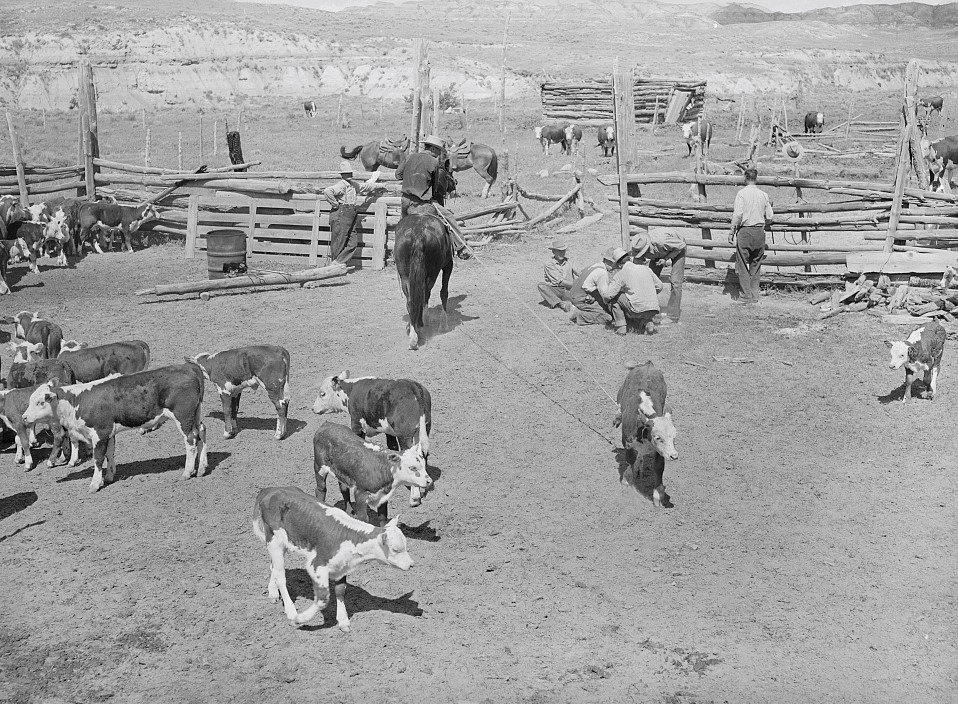

Thanks to your help, Farmer George realized he needs exactly 20 cows and 120 hogs on his family farm to get a maximum profit of $4580. Comparing this to your original guess, can you see the power of linear programming! Now that you're done with this introduction, explore the Problems page to practice more difficult problems on your own! Also, feel free to use the Playground page to solve your own problems with the OptiFarm Grapher Tool!
{% endblock %} {% block next_button %} Restart Practice Problems Playground {% endblock %} {% block right_content %}  {% endblock %}